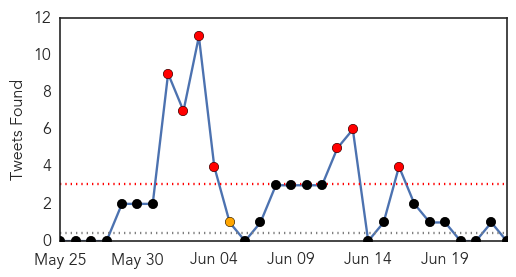
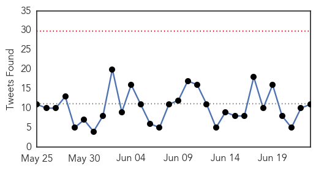
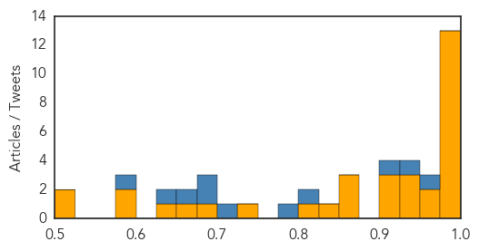

Unknown
30-Day Web Trend
15 alerts, 4 warnings

30-Day Twitter Trend
7 alerts, 1 warnings

Article Locations

Article Confidences

Top Articles:
- 0.998
- AZ Dept. of Health Services Director's Blog
- 0.997
- Thailand says 175 exposed to MERS patient; South Korea reports no new case - World
- 0.997
- MERS virus death toll rises to '471 since 2012': WHO
- 0.997
- The World On Arirang
- 0.997
- S. Korea reports two more MERS deaths
- 0.996
- 2 Deaths, Thailand No New Case Of The Deadly Disease
- 0.995
- South Korea MERS death toll reaches 27 - Regional
- 0.994
- S. Korea's MERS infections rise to 175 with 3 more cases - Xinhua
- 0.984
- No MERS outbreak in Oman: health ministryHealthcare
- 0.984
- The World On Arirang
- 0.982
- Thailand makes MERS test mandatory for patients before entry
- 0.980
- MERS outbreak: South Korea reports three more new cases
- 0.979
- Incurable 'pig plague' African Swine Fever could DECIMATE UK pork industry claim farmers
- 0.973
- Pregnant MERS patient recovers, safely gives birth
- 0.971
- 3 More Cases Reported, Samsung Heir Apologizes On Behalf Of Hospital
- 0.967
- Pattaya News, Communities, Opinions and much more...
- 0.967
- U.S. MERS experts visit S. Korea for technical cooperation
- 0.965
- Thai hospitals rapped over improper care of MERS patients
- 0.963
- Samsung scion apologizes for MERS spread at group hospital
- 0.963
- S Korean Samsung scion apologises for MERS spread at group's hospital
- 0.962
- 27 fatalities confirmed in MERS outbreak
- 0.961
- FPO says MERS situation in Thailand is under control
- 0.960
- UPDATE 3-Samsung scion apologises for MERS spread at group hospital
- 0.960
- UPDATE 3-Samsung scion apologises for MERS spread at group hospital
- 0.959
- Thailand still faces risk of MERS
- 0.958
- Samsung’s ‘crown prince’ says sorry over MERS outbreak
- 0.958
- Outbreak: Suspected Congo virus carrier shifted to isolation ward
- 0.957
- Thailand able to contain deadly virus - Regional
- 0.954
- Hospital sorry for spread of MERS - World News
- 0.954
- Medical tourism expertise helps Thailand cope with MERS
- 0.950
- Samsung Group scion bows in apology for Mers outbreak
- 0.950
- Thai tourism copes with MERS
- 0.938
- South Korea reports three more MERS cases
- 0.937
- Samsung heir apologizes over MERS in S Korea
- 0.935
- domain-b.com : Samsung chief apologises for MERS failings at group hospital
- 0.934
- Samsung’s ‘crown prince’ says sorry over MERS outbreak
- 0.927
- Samsung Heir Apologizes For MERS Spread At Samsung Hospital
- 0.926
- Samsung Group scion bows in apology for MERS outbreak
- 0.921
- MERS super-spreader is discharged from hospital-INSIDE Korea JoongAng Daily
- 0.917
- Chicago Tribune
- 0.917
- Chicago Tribune
- 0.917
- Chicago Tribune
- 0.917
- Chicago Tribune
- 0.917
- Chicago Tribune
- 0.917
- Chicago Tribune
- 0.917
- Chicago Tribune
- 0.917
- Chicago Tribune
- 0.917
- Chicago Tribune
- 0.917
- Chicago Tribune
- 0.917
- Chicago Tribune
Showing top 50 articles...
Top Tweets:
-
No tweets found for Jun 23, 2015
Ebola
30-Day Web Trend
0 alerts, 0 warnings

30-Day Twitter Trend
0 alerts, 0 warnings

Article Locations

Article Confidences
Top Articles:
- 1.000
- New Ebola cases frustrate hopes of defeating the virus in Sierra Leone
- 1.000
- Ebola epidemic was disaster for malaria control: study - Guinea
- 0.999
- Thousands of Guinea malaria cases go untreated amid Ebola fears
- 0.999
- Ebola outbreak: New cases in Freetown, Sierra Leone
- 0.999
- MERS: Should We Be Worried?
- 0.999
- Sierra Leone records new cases of disease weeks a
- 0.999
- Sierra Leone records two new Ebola cases
- 0.998
- Ebola reappears in Sierra Leone′s capital after several weeks without new cases
- 0.997
- Ebola returns to Sierra Leone capital after 3-week gap
- 0.996
- Ebola's early spread charted through genome studies
- 0.996
- Africa: Ebola returns to Sierra Leone capital after three-week gap
- 0.995
- Ebola returns to Sierra Leone capital after 3-week gap
- 0.991
- Liberia Watches Nervously as Ebola Spreads Near Border
- 0.972
- North Korea cure all
- 0.969
- Samsung heir apologises for failing to stop Mers spread at group hospital
- 0.944
- Getting to zero: Moa Wharf fights back Ebola
- 0.943
- One of Sierra Leones Toughest Slums Beats Ebola
- 0.930
- Envoy Kumba Alice Momoh presents Sierra Leone’s Ebola Recovery Strategy to CADFund, Chinese Foreign Ministry
- 0.919
- There Are Now Fewer Than 25 Cases of Ebola
- 0.915
- Kenya : Ebola volunteers to be rewarded for heroic choice, says Uhuru
- 0.909
- Border Town Chiefs Receive Cell-Phones against Ebola
- 0.874
- Health authorities begin border surveillance
- 0.872
- MSF wins global award on Ebola
- 0.863
- North Korea Making Totally Not Sketchy Claims They've Cured AIDS, MERS, Ebola and SARS
- 0.826
- MSF wins global award for Ebola work « Awoko Newspaper
- 0.822
- Concerns Rise Over Ebola Crisis' Effect on Sierra Leone's Justice System
- 0.731
- MOHS Poised to Provide Clean, Safe and healthy Environment in all Hospitals - Sierra Leone
- 0.679
- Brussels Airlines doubles flight frequencies to Freetown and Monrovia
- 0.668
- Chevron Brief MOHS on Plans to Support Part of its Recovery Plan
- 0.636
- Business Coalition, NAS engages Mercury Int. « Awoko Newspaper
- 0.596
- Can we all come with you to Germany for routine health checks, Mr President?
- 0.579
- Ebola Drug Trial Terminated
- 0.525
- West and Central Africa Region Weekly Humanitarian Snapshot (16 – 22 June 2015) - World
- 0.522
- United Nations World Food Programme - Fighting Hunger Worldwide
Top Tweets:
- 0.955
- Ebola Update: 27352 confirmed probable & suspected cases reported in 3 most affected countries with 11178 deaths. EbolaResponse
- 0.944
- Local Nurse Shares His Story On The Ebola Outbreak In West Africa - WIBW http://t.co/TdDBsT3lwk ebola EVD
- 0.911
- Ebola outbreak: New cases in Freetown Sierra Leone - BBC News http://t.co/K9CMC9T7RO ebola EVD
- 0.824
- Current Ebola outbreak has revealed that these vulnerable countries are the reasons we worry about these disease outbreaks. MERSChat
- 0.789
- Generic heart disease medications offer promise for Ebola treatment - Medical Xpress http://t.co/pZBw5pdweJ ebola EVD
- 0.721
- Local Nurse Shares His Story On The Ebola Outbreak In West Africa - WIBW http://t.co/aNltf2VrdS
- 0.683
- Shining a stochastic spotlight on Ebola - Medical Xpress http://t.co/HdkBOJdkTR ebola EVD
- 0.681
- Ebola returns to Sierra Leone capital after three-week gap - Fox News http://t.co/5GaVcjSpzU ebola EVD
- 0.670
- RT: MSF wins Chatham House Prize for Ebola contribution. Well-deserved http://t.co/99KZsXxkqj ebola
- 0.632
- Liberia Watches Nervously as Ebola Spreads Near Border - Voice of America http://t.co/3j2rEtcGsx ebola EVD
- 0.589
- Ebola Drug Trial Terminated - The Scientist http://t.co/C4TUjjj8Ud ebola EVD